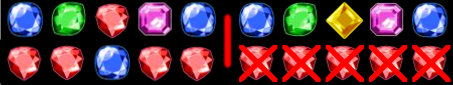
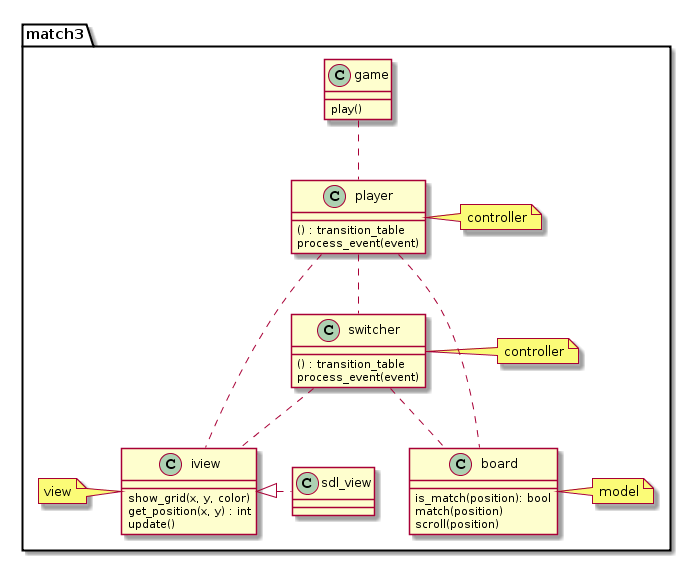

<!doctype html>
<html lang="en">

	<head>
		<meta charset="utf-8">

		<title>Implementing a web game in C++14</title>

		<meta name="description" content="Implementing a web game in C++14">
		<meta name="author" content="Kris Jusiak">

		<meta name="apple-mobile-web-app-capable" content="yes">
		<meta name="apple-mobile-web-app-status-bar-style" content="black-translucent">

		<meta name="viewport" content="width=device-width, initial-scale=1.0, maximum-scale=1.0, user-scalable=no, minimal-ui">

		<link rel="stylesheet" href="css/reveal.css">
    <link rel="stylesheet" href="css/theme/league.css" id="theme">

		<!-- Code syntax highlighting -->
    <link rel="stylesheet" href="lib/css/zenburn.css">

		<!-- Printing and PDF exports -->
		<script>
			var link = document.createElement( 'link' );
			link.rel = 'stylesheet';
			link.type = 'text/css';
			link.href = window.location.search.match( /print-pdf/gi ) ? 'css/print/pdf.css' : 'css/print/paper.css';
			document.getElementsByTagName( 'head' )[0].appendChild( link );
		</script>

		<!--[if lt IE 9]>
		<script src="lib/js/html5shiv.js"></script>
		<![endif]-->
	</head>

	<body>

		<div class="reveal">
			<div class="slides">

          <section data-markdown=""
                   data-separator="^====+$"
                   data-separator-vertical="^----+$"
                   data-notes="^Note:">
					<script type="text/template">
Meeting C++ 2016

##Implementing a web game in C++14

Kris Jusiak

* [kris@jusiak.net](mailto:kris@jusiak.net)
* [@krisjusiak](https://twitter.com/krisjusiak)
* https://www.linkedin.com/in/kris-jusiak

==============================================================================

##Agenda

* The Game
* Overview
  * Emscripten/WebAssembly
  * Range-v3
  * Boost.DI (Proposed)
  * Boost.SML (Proposed)
* Design
* Implementation
* Demo
* Summary

==============================================================================

##Match-3 game

| Match3 | Match4 | Match5 | MatchL |
|-|-|-|-|
|  |  |  |  |

---

> ####Core Mechanics
1. Swipe 2 items
2. Find and remove matches
3. Generate new items and scroll the board
5. Goto 2 // new matches?

==============================================================================

##Overview

----

##Emscripten

> Emscripten is an LLVM-based project that compiles C and C++ into highly-optimizable JavaScript in asm.js format

C++ => LLVM => Emscripten => JavaScript (asm.js)

```cpp
#include <iostream>
int main() {
  std::cout << "hello world!" << '\n';
}
```

```sh
$em++ hello_world.cpp -o index.html
```

```sh
$browser index.html
```

-----

##ASM.JS

###asm.js consists of a strict subset of JavaScript
* Statically-typed
* Manual memory management
* ~ 2x slower than native

----

##ASM.JS example

####C++
```cpp
size_t strlen(char *ptr) {
  char *curr = ptr;
  while (*curr != '\0') curr++;
  return curr − ptr;
}
```

####ASM.JS
```js
function strlen(ptr) {
  ptr = ptr|0; // 32 bit integer
  var curr = 0;
  curr = ptr;
  while (MEM8[curr]|0 != 0) // "heap" view
    curr = (curr + 1)|0;
  return (curr − ptr)|0;
}
```

-----

##WebAssembly

> WebAssembly or wasm is a new portable, size- and load-time-efficient format suitable for compilation to the web

* Binary format
* Memory safe
* Native speed

---

<a href="http://mbebenita.github.io/WasmExplorer" data-preview-link>Wasm Explorer</a>

-----

##WebAssembly Example

####C++
```cpp
size_t strlen(char *); // same as before
```

####Wasm
```cpp
 sub rsp, 8                            ; 0x000020 48 83 ec 08
 mov ecx, edi                          ; 0x000024 8b cf
 add ecx, -1                           ; 0x000026 83 c1 ff
0x000029:                              ; 0x000029 from: [0x00003e]
 mov eax, ecx                          ; 0x000029 8b c1
 add eax, 1                            ; 0x00002b 83 c0 01
 movzx ecx, byte ptr [r15 + rcx + 1]   ; 0x00002e 41 0f b6 4c 0f 01
 test ecx, ecx                         ; 0x000034 85 c9
 je 0x40                               ; 0x000036 0f 84 04 00 00 00
0x00003c:
 mov ecx, eax                          ; 0x00003c 8b c8
 jmp 0x29                              ; 0x00003e eb e9
0x000040:
 sub eax, edi                          ; 0x000040 2b c7
 nop                                   ; 0x000042 66 90
 add rsp, 8                            ; 0x000044 48 83 c4 08
 ret                                   ; 0x000048 c3
```

-----

##Range-v3

views
actions
algorithms

-----

##Experimental Boost.DI

> Dependency Injection Library

https://github.com/boost-experimental/di

----

##Boost.DI

* One header - 3k LOC - (boost/di.hpp) / generated
* Neither Boost nor STL is required
* No 'if's, 'virtual', 'exceptions' (-fno-rtti, -fno-exceptions)
* Non-intrusive
* No run-time overhead
* Quick compilation times
* Short and informative error messages
* Supported compilers (C++14)
  * [Clang-3.4+](https://travis-ci.org/boost-experimental/di), [XCode-6.1+](https://travis-ci.org/boost-experimental/di), [GCC-5.2+](https://travis-ci.org/boost-experimental/di), [MSVC-2015+](https://ci.appveyor.com/project/krzysztof-jusiak/di)

----

##Boost.DI - Hello World

```cpp
#include <boost/di.hpp>
namespace di = boost::di;
```

```cpp
struct iworld { virtual ~iworld() noexcept = default; };
struct world : iworld {};
struct ihello { virtual ~ihello() noexcept = default; };
struct hello : ihello {};
```

```cpp
struct hello_world {
  hello_world(const ihello&, const iworld&); // DI handles order and types
};                  ^              ^
                    |              \------------\
                    \----------------------\    |
int main() {                               |    |
  const auto injector = di::make_injector( |    |
     di::bind<ihello>.to<hello>() ---------/    |
   , di::bind<iworld>.to<world>() -------------/
  );

  auto hw = injector.create<unique_ptr<hello_world>>();
}
```

----

##Hello World

```sh
time $CXX -std=c++14 hello_world.cpp # 0.102s
```

####ASM x86-64

```
push   %rbx
mov    %rdi,%rbx
mov    $0x8,%edi
callq  0x4009f0 <_Znwm@plt>
movq   $0x400e78,(%rax)
mov    %rax,(%rbx)
mov    %rbx,%rax
pop    %rbx
retq
```

####Same as

```cpp
return std::make_unique<hello_world>(...);
```

----

##Hello World - Errors

```cpp
const auto injector = di::make_injector(
// di::bind<ihello>.to<hello>() // no ihello binding
 , di::bind<iworld>.to<world>()
);
auto hw = injector.create<unique_ptr<hello_world>>();
```

####Full Compilation-Time Error Message

```cpp
error: 'create<hello_world>' is deprecated: creatable constraint not satisfied
  injector.create<hello_world>();
           ^
note 'create<hello_world>' has been explicitly marked deprecated here
  create
  ^
error: inline function 'abstract_type<ihello>::is_not_bound::error'
 error(_ = "type is not bound, did you forget to add:
           'di::bind<interface>.to<implementation>()'?");
```

----

##Boost.DI vs Java

| **Library** | Boost.DI | Guice | Dagger2 |
| ----------  | -------- | ------------ | ------- |
| Language    | C++14    | Java | Java |
| Linkage     | header only | jar | jar |
| Approach    | compile-time | run-time | compile-time (annotation processor) |
| Errors      | compile-time errors | exceptions | compile-time errors |

----

##Benchmarks (Clang-3.8/Java8)

| 64 types, 1-4 ctor params, 1024 iterations | **Boost.DI** | **Guice** | **Dagger2** |
| --------------------- | ------------ | ---------------- | ------------- |
| Compilation time    | 0.376s       |  0.570s            | 1.411s        |
| Execution time      | 0.002s       |  0.528s            | 0.157s        |

---

| 256 types, 1-4 ctor params, 1024 iterations | **Boost.DI** | **Guice** | **Dagger2** |
| --------------------- | ------------ | ---------------- | ------------- |
| Compilation time    | 0.706s       | 0.642s             | 1.903s        |
| Execution time      | 0.002s       | 0.544s             | 0.210s        |

----

##Experimental Boost.SML

> UML-2.5 State Machine Language

https://github.com/boost-experimental/sml

-----

##Boost.SML

* One header - 2k LOC - (boost/sml.hpp) / generated
* Neither Boost nor STL is required
* Supports UML-2.5
* Quick compilation-times
* Fast run-time
* Supported compilers (C++14)
  * [Clang-3.4+](https://travis-ci.org/boost-experimental/sml), [XCode-6.1+](https://travis-ci.org/boost-experimental/sml), [GCC-5.2+](https://travis-ci.org/boost-experimental/di), [MSVC-2015+](https://ci.appveyor.com/project/krzysztof-jusiak/sml)

----

##Boost.SML - Hello World


----

##Hello World

```cpp
#include <boost/sml.hpp>
namespace sml = boost::sml;
```

```cpp
// events
struct eat {};
struct full {};
```

```cpp
// guards/actions
const auto is_lunch_time = [] { return true; };
const auto go_for_food = [] { puts("going for food..."); };
```

```cpp
struct hello_world {
  auto operator()() const {
    // Transition table: src_state + event [ guard ] / action = dst_state
    return make_transition_table(
     (*"hungry"_s) + event<eat> [ is_lunch_time ] / go_for_food = "eating"_s
     , "eating"_s  + event<full> / [] { puts("done!"); } = X
    );
}};
```

----

##Hello World

```cpp
int main() {
  sml::sm<hello_world> sm;
  static_assert(1 == sizeof(sm), "sizeof(sm) != 1b");

  sm.process_event(eat{});
  sm.process_event(full{});
}
```

```sh
$./a.out
  going for food...
  done!
```

----

##Hello World

```sh
time $CXX -std=c++14 hello_world.cpp # 0.079s
```

####ASM x86-64

```
process_event<eat>:
    movb  $1, (%r8)     // current state = 1
    movl  $.L.str, %edi // puts("going for food...")
    callq puts
    movl  $1, %eax      // handled
    ret

main:
    leaq  16(%rsp), %rdi
    movq  %rbx, %rsi
    movq  %rbx, %rdx
    movq  %rbx, %rcx
    movq  %rbx, %r8
    call  *process_event<eat> // O(1) - jump table
    ...
```

----

##Benchmarks (Clang-3.8)

| [Complex Test](https://github.com/boost-experimental/sml/tree/master/test/pt/complex) |      Boost.SML | Boost.MSM-eUML   | Boost.Statechart   |
|------------------|----------------|------------------|--------------------|
| Compilation time | 0.582s         | 1m15.935s        | 3.661s             |
| Execution time   | 72ms           | 81ms             | 6221ms             |
| Memory usage     | 1b             | 120b             | 200b               |
| Executable size  | 35K            | 611K             | 343K               |

==============================================================================

##Design

----

##Model-View-Controller


* Seperates business logic from UI
* Good for aplications and/or games

----

##Match3 - Design



==============================================================================

##Implementation

----

##Main

```cpp
int main() {
  const auto injector = di::make_injector(configuration());
  injector.create<match3::game>().play(); // create a game and start playing it
}
```

----

##Configuration

```cpp
const auto configuration = [] {
  return di::make_injector(
    di::bind<icanvas>.to<sdl_canvas>() // view (SDL2)

  , di::bind<>.to(config{ // config
       .title = "match3"
     , .board_size = {7, 10}
    })

  , di::bind<board::color_t[]>.to({ // initial level
      3,5,1,4,3,2,2,
      ...
      1,2,3,4,1,3,4
    })
  );
};
```

----

##View (SDL2)

```cpp
class icanvas {
 public:
  virtual ~icanvas() noexcept = default;

  virtual texture load_image(const std::string&) const = 0;
  virtual texture create_text(const std::string&) const = 0;
  virtual void draw(const texture&, int x = 0, int y = 0) = 0;
  virtual void render() = 0;
  virtual void clear() = 0;
};
```

----

##Game

```cpp
struct game {
  sml::sm<player>& player_; // controller state machine

  void play() {
    const auto dispatch_event = // create a jump table for all SDL events
      sml::utility::make_dispatch_table<SDL_Event, SDL_FIRSTEVENT, SDL_LASTEVENT>(player_);

    while (!player_.is(sml::X)) { // is not in final state
      SDL_Event event;
      while (SDL_PollEvent(&event)) {
        dispatch_event(event, event.type);
      }
    }
  }
};
```

----

##make dispatch table

```cpp
// events
struct quit { static constexpr auto id = SDL_QUIT; };
struct key_pressed {
  static constexpr auto id = SDL_KEYDOWN;
  explicit key_pressed(const SDL_Event& event) : key(event.key.keysym.sym) {}
  const int key = 0;
};
```

```cpp
// state machine
return make_transition_table(
  (*"idle"_s)   + event<key_pressed> = "clicked"_s // id:SDL_KEYDOWN
  , "clicked"_s + event<quit> = X                  // id:SDL_QUIT
);
```

```cpp
sml::utility::make_dispatch_table<SDL_Event, SDL_FIRSTEVENT, SDL_LASTEVENT> = {
  [...] = []{};
  [SDL_KEYDOWN] = [](const SDL_Event& e){ example.process_event(key_pressed{e}); };
  [...] = []{};
  [SDL_QUIT] = [](const SDL_Event& e){ example.process_event(quit{}); };
  [...] = []{};
}
```


----

##Model (Board)

----

##Board

```cpp
                                   [ 0 1 2 ]
std::array<color_t, 3 * 3> grids = [ 3 4 5 ]
                                   [ 6 7 8 ]
```

---

```cpp
class board {
public:
  bool is_match(const position) const;
  auto match(const position) const;
  void scroll(const position);
  decltype(auto) operator[](const position) const;

private:
  std::array<color_t, width * height> grids;
};
```

----

##Row (helper)

```cpp
     | 1 2 3 |           |  1   2   3  |
row: | 3 4 5 | => n:1 -> | [3] [4] [5] |
     | 6 7 8 |           |  6   7   8  |
```

```cpp
const auto row = [](auto&& view, auto n, auto width) {
  return view | ranges::view::drop(width * n) |
         ranges::view::take(width);  // or slice
};
```

```cpp
"row"_test = [] {
  int v[] = {1, 2, 3, 4, 5, 6};
  expect(ranges::equal({1, 2}, row(v, 0, 2)));
  expect(ranges::equal({3, 4}, row(v, 1, 2)));
  expect(ranges::equal({5, 6}, row(v, 2, 2)));
  expect(ranges::equal({1, 2, 3}, row(v, 0, 3)));
};
```

----

##Col (helper)

```cpp
     | 1 2 3 |           | 1 [2] 3 |
col: | 3 4 5 | => n:1 -> | 3 [4] 5 |
     | 6 7 8 |           | 6 [7] 8 |
```

```cpp
const auto col = [](auto&& view, auto n, auto width) {
  return view | ranges::view::drop(n) | ranges::view::stride(int(width));
};
```

```cpp
"col"_test = [] {
  int v[] = {1, 2, 3, 4, 5, 6};
  expect(ranges::equal({1, 3, 5}, col(v, 0, 2)));
  expect(ranges::equal({2, 4, 6}, col(v, 1, 2)));
  expect(ranges::equal({1, 4}, col(v, 0, 3)));
};
```

----

##Match-N (helper)

```cpp
match-n: | 1 3 3 3 2 1 | => color:3, n:3 -> {begin: 1, length: 3}
         | 1 2 3 3 3 3 | => color:3, n:3 -> {begin: 2, length: 4}
```

```cpp
const auto match_n = [](auto&& view, auto color, const int max_match_length = 3) {
  const auto&& matches = ranges::view::ints |
      ranges::view::take(ranges::size(view) - max_match_length + 1) |
      ranges::view::transform([=](auto i) {
        return ranges::count(view | ranges::view::drop(i) |
                                 ranges::view::take(max_match_length),
                             color) == max_match_length;
      });

  constexpr auto is_match = true;
  const auto it = ranges::find(matches, is_match);
  const auto found = it != ranges::end(matches);
  const auto mlength =
      found ? ranges::count(matches, is_match) + (max_match_length - 1) : 0;
  const auto mbegin = found ? ranges::distance(ranges::begin(matches), it) : 0;

  struct {
    decltype(mbegin) begin;
    decltype(mlength) length;
  } result{mbegin, mlength};
  return result;
};
```

```cpp
"match n fail"_test = [] {
  int v[] = {1, 3, 2, 3, 2};
  auto m = match_n(v, 3);
  expect(0 == m.begin);
  expect(0 == m.length);
};

"match n success 3"_test = [] {
  int v[] = {1, 3, 3, 3, 2};
  auto m = match_n(v, 3);
  expect(1 == m.begin);
  expect(3 == m.length);
};

"match n success 4"_test = [] {
  int v[] = {1, 3, 3, 3, 3, 2};
  auto m = match_n(v, 3);
  expect(1 == m.begin);
  expect(4 == m.length);
};

"match n success 5"_test = [] {
  int v[] = {1, 2, 3, 3, 3, 3, 3, 1, 2};
  auto m = match_n(v, 3);
  expect(2 == m.begin);
  expect(5 == m.length);
};
```

----

##Is match

```cpp
          | 1 2 3 4 5 |                | 1 2 3  4  5 |    | 1 2 3  4  5 |
          | 6 7 7 9 3 |                | 6 7 7  9  3 |    | 6 7 7  9  3 |
is_match: | 2 3 4 5 3 | => value:13 -> | 2 3 4 [5] 3 | => | 2 3 4 [5] 3 | => true
          | 2 1 3 5 1 |                | 2 1 3  5  1 |    | 2 1 3 [5] 1 |
          | 4 2 1 5 8 |                | 4 2 1  5  8 |    | 4 2 1 [5] 8 |
```

```cpp
const auto is_match = [](auto&& view, auto value, auto width) {
  const auto color = view[value];
  const auto x = value % width;
  const auto y = value / width;
  return match_n(row(view, y, width), color).length ||
         match_n(col(view, x, width), color).length;
};
```

```cpp
"is match fail"_test = [] {
  int v[] = {1, 2, 3, 4, 3, 6, 7, 2, 9};
  expect(!is_match(v, 1, 3));
};

"is match success"_test = [] {
  int v[] = {1, 2, 3, 4, 2, 6, 7, 2, 9};
  expect(is_match(v, 1, 3));
};
```

----

##Match

```cpp
       | 1 2 3 4 5 |                 | 1  2 3  4  5 |    | 1  2   3   4  5 |
       | 6 7 7 9 3 |                 | 6  7 7  9  3 |    | 6  7   7   9  3 |
match: | 2 5 5 5 3 |  => value:13 -> | 2  5 5 [5] 3 | => | 2 [5] [5] [5] 3 | => [11, 12, 13, 18, 23]
       | 2 1 3 5 1 |                 | 2  1 3  5  3 |    | 2  1   3  [5] 3 |
       | 4 2 1 5 8 |                 | 4  2 1  5  8 |    | 4  2   1  [5] 8 |
```

```cpp
const auto match = [](auto&& view, auto value, auto width) {
  const auto color = view[value];
  const auto x = value % width;
  const auto y = value / width;
  const auto match_r = match_n(row(view, y, width), color);
  const auto match_c = match_n(col(view, x, width), color);
  const auto transform = [](auto length, auto expr) {
    return ranges::view::ints | ranges::view::take(length) |
           ranges::view::transform(expr);
  };
  std::vector<decltype(value)> result = ranges::view::concat(
      transform(match_r.length,
                [=](auto i) { return y * width + match_r.begin + i; }),
      transform(match_c.length,
                [=](auto i) { return (match_c.begin + i) * width + x; }));
  result |= ranges::action::sort | ranges::action::unique;
  return result;
};
```

```cpp
"match fail"_test = [] {
  int v[] = {1, 2, 3, 4, 3, 3, 7, 2, 4};
  expect(ranges::equal(std::vector<int>{}, match(v, 2, 3)));
};

"match success"_test = [] {
  int v[] = {1, 2, 3, 4, 3, 3, 7, 2, 3};
  expect(ranges::equal({2, 5, 8}, match(v, 2, 3)));
};
```

----

##Scroll

```cpp
        | 3 |                |  3  |    | 0 |
        | 0 |                | [0] |    | 0 |
scroll: | 0 |  => value:1 -> |  0  | => | 0 |
        | 0 |                |  0  |    | 3 |
        | 4 |                |  4  |    | 4 |
```

```cpp
const auto scroll = [](auto&& view, auto value, auto width) {
  const auto&& c =
      col(view, value % width, width) | ranges::view::take(value / width + 1);
  auto begin = ranges::begin(c);
  ranges::advance(begin, value / width);
  ranges::rotate(c, begin);
};
```

```cpp
"scroll"_test = [] {
  int v[] = {1, 1, 3, 4, 0, 2, 7, 0, 3};

  scroll(v, 4, 3);
  expect(ranges::equal({1, 0, 3, 4, 1, 2, 7, 0, 3}, v));

  scroll(v, 7, 3);
  expect(ranges::equal({1, 0, 3, 4, 0, 2, 7, 1, 3}, v));
};
```

----

##Controller (Player State Machine)

```cpp
```

----

##Player Transition Table

```cpp
// --------------------------------------------------------------------------------------- //
//    src_state     + event       [ guard ] / action                    = dst_state        //
// --------------------------------------------------------------------------------------- //
```

```
sml::make_transition_table(
 (*"idle"_s)                    / reset_and_show                       = "first item"_s,
  "first item"_s  + event<down> / select_item                          = "second item"_s,
  "second item"_s + event<up>   [ is_allowed ] / select_and_swap_items = "match items"_s,
  "second item"_s + event<up>   / drop_item                            = "first item"_s,
  "match items"_s               [ is_swap_items_winning ] /
                                  ([](moves& m) {--m;},
                                   show_moves,
                                   process(matches{.arity = 2}))       = state<switcher>,
  "match items"_s + event<up>   / (swap_items,
                                   show_swap,
                                   clear_selected)                     = "first item"_s,
  state<switcher> + event<down> / select_item                          = "second item"_s,
```

```cpp
  (*"is click"_s) + event<key_pressed> [ is_key(SDLK_ESCAPE) ]         = X,
    "is click"_s  + event<quit>                                        = X
);
```

----

##Compile & Run

```sh
$em++ -std=c++14 -s USE_SDL=2 -s USE_SDL_IMAGE=2 -s USE_SDL_TTF=2
     --preload-file data # images and fonts
     --use-preload-plugins # load data
     -o index.html src/main.cpp
```

```sh
$browser index.html
```

==============================================================================

##Demo / C++14 game on the slide!

<div class="stretch">
  <iframe src="http://modern-cpp-examples.github.io/match3" height="100%" width="100%" />
</div>

----

asm.js source code

----

wasm source code

==============================================================================

##Summary

----

###C++ on the web is happening!

----

### Leverage Zero-cost libraries (not only abstractions)

----

### Range-v3 is easy and powerful (STL2)

----

### Dependency Injection + State Machine = Better Design

==============================================================================

##Questions?

[kris@jusiak.net](mailto:kris@jusiak.net) | [@krisjusiak](https://twitter.com/krisjusiak)

|  |  |
| ------- | ------------- |
| Match-3 Game | https://github.com/modern-cpp-examples/match3 |
| Emscripten | http://emscripten.org |
| WebAssembly | http://webassembly.org |
| Range-V3 | https://github.com/ericniebler/range-v3 |
| Boost.DI* | https://github.com/boost-experimental/di |
| Boost.SML* | https://github.com/boost-experimental/sml |
					</script>
				</section>

			</div>
		</div>

		<script src="lib/js/head.min.js"></script>
		<script src="js/reveal.js"></script>

		<script>

			// Full list of configuration options available at:
			// https://github.com/hakimel/reveal.js#configuration
			Reveal.initialize({

        // Display controls in the bottom right corner
        controls: true,

        // Display a presentation progress bar
        progress: true,

        // Display the page number of the current slide
        slideNumber: true,

        // Push each slide change to the browser history
        history: true,

        // Enable keyboard shortcuts for navigation
        keyboard: true,

        // Enable the slide overview mode
        overview: true,

        // Vertical centering of slides
        center: true,

        // Enables touch navigation on devices with touch input
        touch: true,

        // Loop the presentation
        loop: false,

        // Change the presentation direction to be RTL
        rtl: false,

        // Turns fragments on and off globally
        fragments: false,

        // Flags if the presentation is running in an embedded mode,
        // i.e. contained within a limited portion of the screen
        embedded: false,

        // Flags if we should show a help overlay when the questionmark
        // key is pressed
        help: true,

        // Flags if speaker notes should be visible to all viewers
        showNotes: false,

        // Number of milliseconds between automatically proceeding to the
        // next slide, disabled when set to 0, this value can be overwritten
        // by using a data-autoslide attribute on your slides
        autoSlide: 0,

        // Stop auto-sliding after user input
        autoSlideStoppable: true,

        // Enable slide navigation via mouse wheel
        mouseWheel: true,

        // Hides the address bar on mobile devices
        hideAddressBar: true,

        // Opens links in an iframe preview overlay
        previewLinks: false,

        // Transition style
        transition: 'convex', // none/fade/slide/convex/concave/zoom

        // Transition speed
        transitionSpeed: 'default', // default/fast/slow

        // Transition style for full page slide backgrounds
        backgroundTransition: 'default', // none/fade/slide/convex/concave/zoom

        // Number of slides away from the current that are visible
        viewDistance: 3,

        // Parallax background image
        parallaxBackgroundImage: '', // e.g. "'https://s3.amazonaws.com/hakim-static/reveal-js/reveal-parallax-1.jpg'"

        // Parallax background size
        parallaxBackgroundSize: '', // CSS syntax, e.g. "2100px 900px"

        // Number of pixels to move the parallax background per slide
        // - Calculated automatically unless specified
        // - Set to 0 to disable movement along an axis
        parallaxBackgroundHorizontal: null,
        parallaxBackgroundVertical: null,

				// Optional reveal.js plugins
				dependencies: [
					{ src: 'lib/js/classList.js', condition: function() { return !document.body.classList; } },
					{ src: 'plugin/markdown/marked.js', condition: function() { return !!document.querySelector( '[data-markdown]' ); } },
					{ src: 'plugin/markdown/markdown.js', condition: function() { return !!document.querySelector( '[data-markdown]' ); } },
					{ src: 'plugin/highlight/highlight.js', async: true, callback: function() { hljs.initHighlightingOnLoad(); } },
					{ src: 'plugin/zoom-js/zoom.js', async: true },
					{ src: 'plugin/notes/notes.js', async: true }
				]
			});

		</script>

	</body>
</html>
